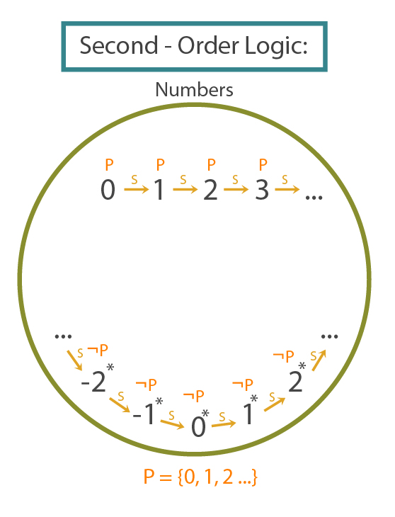
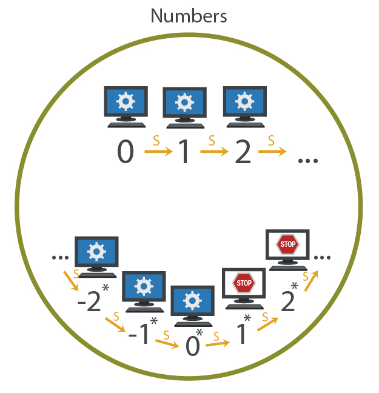

Followup to: Logical Pinpointing [http://lesswrong.com/lw/f4e/logical_pinpointing/]
"Oh! Hello. Back again?"
Yes, I've got another question. Earlier you said that you had to use second-order logic to define the numbers. But I'm pretty sure I've heard about something called 'first-order Peano arithmetic' which is also supposed to define the natural numbers. Going by the name, I doubt it has any 'second-order' axioms. Honestly, I'm not sure I understand this second-order business at all.
"Well, let's start by examining the following model:"

"This model has three properties that we would expect to be true of the standard numbers - 'Every number has a successor', 'If two numbers have the same successor they are the same number', and '0 is the only number which is not the successor of any number'. All three of these statements are true in this model, so in that sense it's quite numberlike -"
And yet this model clearly is not the numbers we are looking for, because it's got all these mysterious extra numbers like C and -2*. That C thing even loops around, which I certainly wouldn't expect any number to do. And then there's that infinite-in-both-directions chain which isn't corrected to anything else.
"Right, so, the difference between first-order logic and second-order logic is this: In first-order logic, we can get rid of the ABC - make a statement which rules out any model that has a loop of numbers like that. But we can't get rid of the infinite chain underneath it. In second-order logic we can get rid of the extra chain."
I would ask you to explain why that was true, but at this point I don't even know what second-order logic is.
"Bear with me. First, consider that the following formula detects 2-ness:"
x + 2 = x * 2
In other words, that's a formula which is true when x is equal to 2, and false everywhere else, so it singles out 2?
"Exactly. And this is a formula which detects odd numbers:"
∃y: x=(2*y)+1
Um... okay. That formula says, 'There exists a y, such that x equals 2 times y plus one.' And that's true when x is 1, because 0 is a number, and 1=(2*0)+1. And it's true when x is 9, because there exists a number 4 such that 9=(2*4)+1... right. The formula is true at all odd numbers, and only odd numbers.
"Indeed. Now suppose we had some way to detect the existence of that ABC-loop in the model - a formula which was true at the ABC-loop and false everywhere else. Then I could adapt the negation of this statement to say 'No objects like this are allowed to exist', and add that as an axiom alongside 'Every number has a successor' and so on. Then I'd have narrowed down the possible set of models to get rid of models that have an extra ABC-loop in them."
Um... can I rule out the ABC-loop by saying ¬∃x:(x=A)?
"Er, only if you've told me what A is in the first place, and in a logic which has ruled out all models with loops in them, you shouldn't be able to point to a specific object that doesn't exist -"
Right. Okay... so the idea is to rule out loops of successors... hm. In the numbers 0, 1, 2, 3..., the number 0 isn't the successor of any number. If I just took a group of numbers starting at 1, like {1, 2, 3, ...}, then 1 wouldn't be the successor of any number inside that group. But in A, B, C, the number A is the successor of C, which is the successor of B, which is the successor of A. So how about if I say: 'There's no group of numbers G such that for any number x in G, x is the successor of some other number y in G.'
"Ah! Very clever. But it so happens that you just used second-order logic, because you talked about groups or collections of entities, whereas first-order logic only talks about individual entities. Like, suppose we had a logic talking about kittens and whether they're innocent. Here's a model of a universe containing exactly three distinct kittens who are all innocent:"

Er, what are those 'property' thingies?
"They're all possible collections of kittens. They're labeled properties because every collection of kittens corresponds to a property that some kittens have and some kittens don't. For example, the collection on the top right, which contains only the grey kitten, corresponds to a predicate which is true at the grey kitten and false everywhere else, or to a property which the grey kitten has which no other kitten has. Actually, for now let's just pretend that 'property' just says 'collection'."
Okay. I understand the concept of a collection of kittens.
"In first-order logic, we can talk about individual kittens, and how they relate to other individual kittens, and whether or not any kitten bearing a certain relation exists or doesn't exist. For example, we can talk about how the grey kitten adores the brown kitten. In second-order logic, we can talk about collections of kittens, and whether or not those collections exist. So in first-order logic, I can say, 'There exists a kitten which is innocent', or 'For every individual kitten, that kitten is innocent', or 'For every individual kitten, there exists another individual kitten which adores the first kitten.' But it requires second-order logic to make statements about collections of kittens, like, 'There exists no collection of kittens such that every kitten in it is adored by some other kitten inside the collection.'"
I see. So when I tried to say that you couldn't have any group of numbers, such that every number in the group was a successor of some other number in the group...
"...you quantified over the existence or nonexistence of collections of numbers, which means you were using second-order logic. However, in this particular case, it's easily possible to rule out the ABC-loop of numbers using only first-order logic. Consider the formula:"
x=SSSx
x plus 3 is equal to itself?
"Right. That's a first-order formula, since it doesn't talk about collections. And that formula is false at 0, 1, 2, 3... but true at A, B, and C."

What does the '+' mean?
"Er, by '+' I was trying to say, 'this formula works out to True' and similarly '¬' was supposed to mean the formula works out to False. The general idea is that we now have a formula for detecting 3-loops, and distinguishing them from standard numbers like 0, 1, 2 and so on."
I see. So by adding the new axiom, ¬∃x:x=SSSx, we could rule out all the models containing A, B, and C or any other 3-loop of nonstandard numbers.
"Right."
But this seems like a rather arbitrary sort of axiom to add to a fundamental theory of arithmetic. I mean, I've never seen any attempt to describe the numbers which says, 'No number is equal to itself plus 3' as a basic premise. It seems like it should be a theorem, not an axiom.
"That's because it's brought in using a more general rule. In particular, first-order arithmetic has an infinite axiom schema - an infinite but computable scheme of axioms. Each axiom in the schema says, for a different first-order formula Φ(x) - pronounced 'phi of x' - that:"
- If Φ is true at 0, i.e: Φ(0)
- And if Φ is true of the successor of any number where it's true, i.e: ∀x: Φ(x)→Φ(Sx)
- Then Φ is true of all numbers: ∀n: Φ(n)
(Φ(0) ∧ (∀x: Φ(x) → Φ(Sx))) → (∀n: Φ(n))
"In other words, every formula which is true at 0, and which is true of the successor of any number of which it is true, is true everywhere. This is the induction schema of first-order arithmetic. As a special case we have the particular inductive axiom:"
(0≠SSS0 ∧ (∀x: (x≠SSSx) → (Sx≠SSSSx)) → (∀n: n≠SSSn)
But that doesn't say that for all n, n≠n+3. It gives some premises from which that conclusion would follow, but we don't know the premises.
"Ah, however, we can prove those premises using the other axioms of arithmetic, and hence prove the conclusion. The formula (SSSx=x) is false at 0, because 0 is not the successor of any number, including SS0. Similarly, consider the formula SSSSx=Sx, which we can rearrange as S(SSSx)=S(x). If two numbers have the same successor they are the same number, so SSSx=x. If truth at Sx proves truth at x, then falsity at x proves falsity at Sx, modus ponens to modus tollens. Thus the formula is false at zero, false of the successor of any number where it's false, and so must be false everywhere under the induction axiom schema of first-order arithmetic. And so first-order arithmetic can rule out models like this:"
...er, I think I see? Because if this model obeys all the other axioms which which we already specified, that didn't filter it out earlier - axioms like 'zero is not the successor of any number' and 'if two numbers have the same successor they are the same number' - then we can prove that the formula x≠SSSx is true at 0, and prove that if the formula true at x it must be true at x+1. So once we then add the further axiom that if x≠SSSx is true at 0, and if x≠SSSx is true at Sy when it's true at y, then x≠SSSx is true at all x...
"We already have the premises, so we get the conclusion. ∀x: x≠SSSx, and thus we filter out all the 3-loops. Similar logic rules out N-loops for all N."
So then did we get rid of all the nonstandard numbers, and leave only the standard model?
"No. Because there was also that problem with the infinite chain ... -2*, -1*, 0*, 1* and so on."
Here's one idea for getting rid of the model with an infinite chain. All the nonstandard numbers in the chain are "greater" than all the standard numbers, right? Like, if w is a nonstandard number, then w > 3, w > 4, and so on?
"Well, we can prove by induction that no number is less than 0, and w isn't equal to 0 or 1 or 2 or 3, so I'd have to agree with that."
Okay. We should also be able to prove that if x > y then x + z > y + z. So if we take nonstandard w and ask about w + w, then w + w must be greater than w + 3, w + 4, and so on. So w + w can't be part of the infinite chain at all, and yet adding any two numbers ought to yield a third number.
"Indeed, that does prove that if there's one infinite chain, there must be two infinite chains. In other words, that original, exact model in the picture, can't all by itself be a model of first-order arithmetic. But showing that the chain implies the existence of yet other elements, isn't the same as proving that the chain doesn't exist. Similarly, since all numbers are even or odd, we must be able to find v with v + v = w, or find v with v + v + 1 = w. Then v must be part of another nonstandard chain that comes before the chain containing w."
But then that requires an infinite number of infinite chains of nonstandard numbers which are all greater than any standard number. Maybe we can extend this logic to eventually reach a contradiction and rule out the existence of an infinite chain in the first place - like, we'd show that any complete collection of nonstandard numbers has to be larger than itself -
"Good idea, but no. You end up with the conclusion that if a single nonstandard number exists, it must be part of a chain that's infinite in both directions, i.e., a chain that looks like an ordered copy of the negative and positive integers. And that if an infinite chain exists, there must be infinite chains corresponding to all rational numbers. So something that could actually be a nonstandard model of first-order arithmetic, has to contain at least the standard numbers followed by a copy of the rational numbers with each rational number replaced by a copy of the integers. But then that setup works just fine with both addition and multiplication - we can't prove that it has to be any larger than what we've already said."
Okay, so how do we get rid of an infinite number of infinite chains of nonstandard numbers, and leave just the standard numbers at the beginning? What kind of statement would they violate - what sort of axiom would rule out all those extra numbers?
"We have to use second-order logic for that one."
Honestly I'm still not 100% clear on the difference.
"Okay... earlier you gave me a formula which detected odd numbers."
Right. ∃y: x=(2*y)+1, which was true at x=1, x=9 and so on, but not at x=0, x=4 and so on.
"When you think in terms of collections of numbers, well, there's some collections which can be defined by formulas. For example, the collection of odd numbers {1, 3, 5, 7, 9, ...} can be defined by the formula, with x free, ∃y: x=(2*y)+1. But you could also try to talk about just the collection {1, 3, 5, 7, 9, ...} as a collection, a set of numbers, whether or not there happened to be any formula that defined it -"
Hold on, how can you talk about a set if you can't define a formula that makes something a member or a non-member? I mean, that seems a bit smelly from a rationalist perspective -
"Er... remember the earlier conversation about kittens?"
"Suppose you say something like, 'There exists a collection of kittens, such that every kitten adores only other kittens in the collection'. Give me a room full of kittens, and I can count through all possible collections, check your statement for each collection, and see whether or not there's a collection which is actually like that. So the statement is meaningful - it can be falsified or verified, and it constrains the state of reality. But you didn't give me a local formula for picking up a single kitten and deciding whether or not it ought to be in this mysterious collection. I had to iterate through all the collections of kittens, find the collections that matched your statement, and only then could I decide whether any individual kitten had the property of being in a collection like that. But the statement was still falsifiable, even though it was, in mathematical parlance, impredicative - that's what we call it when you make a statement that can only be verified by looking at many possible collections, and doesn't start from any particular collection that you tell me how to construct."
Ah... hm. What about infinite universes of kittens, so you can't iterate through all possible collections in finite time?
"If you say, 'There exists a collection of kittens which all adore each other', I could exhibit a group of three kittens which adored each other, and so prove the statement true. If you say 'There's a collection of four kittens who adore only each other', I might come up with a constructive proof, given the other known properties of kittens, that your statement was false; and any time you tried giving me a group of four kittens, I could find a fifth kitten, adored by some kitten in your group, that falsified your attempt. But this is getting us into some rather deep parts of math [http://en.wikipedia.org/wiki/Arithmetical_hierarchy] we should probably stay out of for now. The point is that even in infinite universes, there are second-order statements that you can prove or falsify in finite amounts of time. And once you admit those particular second-order statements are talking about something meaningful, well, you might as well just admit that second-order statements in general are meaningful."
...that sounds a little iffy to me, like we might get in trouble later on.
"You're not the only mathematician who worries about that."
But let's get back to numbers. You say that we can use second-order logic to rule out any infinite chain.
"Indeed. In second-order logic, instead of using an infinite axiom schema over all formulas Φ, we quantify over possible collections directly, and say, in a single statement:"
∀P: P(0) ∧ (∀x: P(x) → P(Sx)) → (∀n: P(n))
"Here P is any predicate true or false of individual numbers. Any collection of numbers corresponds to a predicate that is true of numbers inside the collection and false of numbers outside of it."
Okay... and how did that rule out infinite chains again?
"Because in principle, whether or not there's any first-order formula that picks them out, there's theoretically a collection that contains the standard numbers {0, 1, 2, ...} and only the standard numbers. And if you treat that collection as a predicate P, then P is true at 0 - that is, 0 is in the standard numbers. And if 200 is a standard number then so is 201, and so on; if P is true at x, it's true at x+1. On the other hand, if you treat the collection 'just the standard numbers' as a predicate, it's false at -2*, false at -1*, false at 0* and so on - those numbers aren't in this theoretical collection. So it's vacuously true that this predicate is true at 1* if it's true at 0*, because it's not true at 0*. And so we end up with:"

"And so the single second-order axiom..."
∀P: P0 ∧ (∀x: Px → P(Sx)) → (∀n: Pn)
"...rules out any disconnected chains, finite loops, and indeed every nonstandard number, in one swell foop."
But what did that axiom mean, exactly? I mean, taboo the phrase 'standard numbers' for a moment, pretend I've got no idea what those are, just explain to me what the axiom actually says.
"It says that the model being discussed - the model which fits this axiom - makes it impossible to form any collection closed under succession which includes 0 and doesn't include everything. It's impossible to have any collection of objects in this universe such that 0 is in the collection, and the successor of everything in the collection is in the collection, and yet this collection doesn't contain everything. So you can't have a disconnected infinite chain - there would then exist at least one collection over objects in this universe that contained 0 and all its successor-descendants, yet didn't contain the chain; and we have a shiny new axiom which says that can't happen."
Can you perhaps operationalize that in a more sensorymotory [http://lesswrong.com/lw/bc3/sotw_be_specific/] sort of way? Like, if this is what I believe about the universe, then what do I expect to see?
"If this is what you believe about the mathematical model that you live in... then you believe that neither you, nor any adversary, nor yet a superintelligence, nor yet God, can consistently say 'Yea' or 'Nay' to objects in such fashion that when you present them with 0, they say 'Yea', and when you present them with any other object, if they say 'Yea', they also say 'Yea' for the successor of that object; and yet there is some object for which they say 'Nay'. You believe this can never happen, no matter what. The way in which the objects in the universe are arranged by succession, just doesn't let that happen, ever."
Ah. So if, say, they said 'Nay' for 42, I'd go back and ask about 41, and then 40, and by the time I reached 0, I'd find either that they said 'Nay' about 0, or that they said 'Nay' for 41 and yet 'Yea' for 40. And what do I expect to see if I believe in first-order arithmetic, with the infinite axiom schema?
"In that case, you believe there's no neatly specifiable, compactly describable rule which behaves like that. But if you believe the second-order version, you believe nobody can possibly behave like that even if they're answering randomly, or branching the universe to answer different ways in different alternate universes, and so on. And note, by the way, that if we have a finite universe - i.e., we throw out the rule that every number has a successor, and say instead that 256 is the only number which has no successor - then we can verify this axiom in finite time."
I see. Still, is there any way to rule out infinite chains using first-order logic? I might find that easier to deal with, even if it looks more complicated at first.
"I'm afraid not. One way I like to look at it is that first-order logic can talk about constraints on how the model looks from any local point, while only second-order logic can talk about global qualities of chains, collections, and the model as a whole. Whether every number has a successor is a local property - a question of how the model looks from the vantage point of any one number. Whether a number plus three, can be equal to itself, is a question you could evaluate at the local vantage point of any one number. Whether a number is even, is a question you can answer by looking around for a single, individual number x with the property that x+x equals the first number. But when you try to say that there's only one connected chain starting at 0, by invoking the idea of connectedness and chains you're trying to describe non-local properties that require a logic-of-possible-collections to specify."
Huh. But if all the 'local' properties are the same regardless, why worry about global properties? In first-order arithmetic, any 'local' formula that's true at zero and all of its 'natural' successors would also have to be true of all the disconnected infinite chains... right? Or did I make an error there? All the other infinite chains besides the 0-chain - all 'nonstandard numbers' - would have just the same properties as the 'natural' numbers, right?
"I'm afraid not. The first-order axioms of arithmetic may fail to pin down whether or not a Turing machine halts - whether there exists a time at which a Turing machine halts. Let's say that from our perspective inside the standard numbers, the Turing machine 'really doesn't' halt - it doesn't halt on clock tick 0, doesn't halt on clock tick 1, doesn't halt on tick 2, and so on through all the standard successors of the 0-chain. In nonstandard models of the integers - models with other infinite chains - there might be somewhere inside a nonstandard chain where the Turing machine goes from running to halted and stays halted thereafter."

"In this new model - which is fully compatible with the first-order axioms, and can't be ruled out by them - it's not true that 'for every number t at which the Turing machine is running, it will still be running at t+1'. Even though if we could somehow restrict our attention to the 'natural' numbers, we would see that the Turing machine was running at 0, 1, 2, and every time in the successor-chain of 0."
Okay... I'm not quite sure what the practical implication of that is?
"It means that many Turing machines which in fact never halt at any standard time, can't be proven not to halt using first-order reasoning, because their non-halting-ness does not actually follow logically from the first-order axioms. Logic is about which conclusions follow from which premises [http://lesswrong.com/lw/f43/proofs_implications_and_models/], remember? If there are models which are compatible with all the first-order premises, but still falsify the statement 'X runs forever', then the statement 'X runs forever' can't logically follow from those premises. This means you won't be able to prove - shouldn't be able to prove - that this Turing machine halts, using only first-order logic."
How exactly would this fail in practice? I mean, where does the proof go bad?
"You wouldn't get the second step of the induction, 'for every number t at which the Turing machine is running, it will still be running at t+1'. There'd be nonstandard models with some nonstandard t that falsifies the premise - a nonstandard time where the Turing machine goes from running to halted. Even though if we could somehow restrict our attention to only the standard numbers, we would see that the Turing machine was running at 0, 1, 2, and so on."
But if a Turing machine really actually halts, there's got to be some particular time when it halts, like on step 97 -
"Indeed. But 97 exists in all nonstandard models of arithmetic, so we can prove its existence in first-order logic. Any time 0 is a number, every number has a successor, numbers don't loop, and so on, there'll exist 97. Every nonstandard model has at least the standard numbers. So whenever a Turing machine does halt, you can prove in first-order arithmetic that it halts - it does indeed follow from the premises. That's kinda what you'd expect, given that you can just watch the Turing machine for 97 steps. When something actually does halt, you should be able to prove it halts without worrying about unbounded future times! It's when something doesn't actually halt - in the standard numbers, that is - that the existence of 'nonstandard halting times' becomes a problem. Then, the conclusion that the Turing machine runs forever may not actually follow from first-order arithmetic, because you can obey all the premises of first-order arithmetic, and yet still be inside a nonstandard model where this Turing machine halts at a nonstandard time."
So second-order arithmetic is more powerful than first-order arithmetic in terms of what follows from the premises?
"That follows inevitably from the ability to talk about fewer possible models. As it is written, 'What is true of one apple may not be true of another apple; thus more can be said about a single apple than about all the apples in the world [http://lesswrong.com/lw/ic/the_virtue_of_narrowness/].' If you can restrict your discourse to a narrower collection of models, there are more facts that follow inevitably, because the more models you might be talking about, the fewer facts can possibly be true about all of them. And it's also definitely true that second-order arithmetic proves more theorems than first-order arithmetic - for example, it can prove that a Turing machine which computes Goodstein sequences [http://en.wikipedia.org/wiki/Goodstein's_theorem] always reaches 0 and halts, or that Hercules always wins the hydra game [http://math.andrej.com/2008/02/02/the-hydra-game/]. But there's a bit of controversy we'll get into later about whether second-order logic is actually more powerful than first-order logic in general."
Well, sure. After all, just because nobody has ever yet invented a first-order formula to filter out all the nonstandard numbers, doesn't mean it can never, ever be done. Tomorrow some brilliant mathematician might figure out a way to take an individual number x, and do local things to it using addition and multiplication and the existence or nonexistence of other individual numbers, which can tell us whether that number is part of the 0-chain or some other infinite-in-both-directions chain. It'll be as easy as (a=b*c) -
"Nope. Ain't never gonna happen."
But maybe you could find some entirely different creative way of first-order axiomatizing the numbers which has only the standard model -
"Nope."
Er... how do you know that, exactly? I mean, part of the Player Character Code is that you don't give up when something seems impossible. I can't quite see yet how to detect infinite chains using a first-order formula. But then earlier I didn't realize you could rule out finite loops, which turned out to be quite simple once you explained. After all, there's two distinct uses of the word 'impossible', one which indicates positive knowledge that something can never be done, that no possible chain of actions can ever reach a goal, even if you're a superintelligence. This kind of knowledge requires a strong, definite grasp on the subject matter, so that you can rule out every possible avenue of success. And then there's another, much more common use of the word 'impossible', which means that you thought about it for five seconds but didn't see any way to do it, usually used in the presence of weak grasps on a subject, subjects that seem sacredly mysterious -
"Right. Ruling out an infinite-in-both-directions chain, using a first-order formula, is the first kind of impossibility. We know that it can never be done."
I see. Well then, what do you think you know, and how do you think you know it? How is this definite, positive knowledge of impossibility obtained, using your strong grasp on the non-mysterious subject matter?
"We'll take that up next time."
Part of the sequence Highly Advanced Epistemology 101 for Beginners [http://wiki.lesswrong.com/wiki/Highly_Advanced_Epistemology_101_for_Beginners]
Next post: "Godel's Completeness and Incompleteness Theorems [http://lesswrong.com/lw/g1y/godels_completeness_and_incompleteness_theorems/]"
Previous post: "By Which It May Be Judged [http://lesswrong.com/lw/fv3/by_which_it_may_be_judged/]"